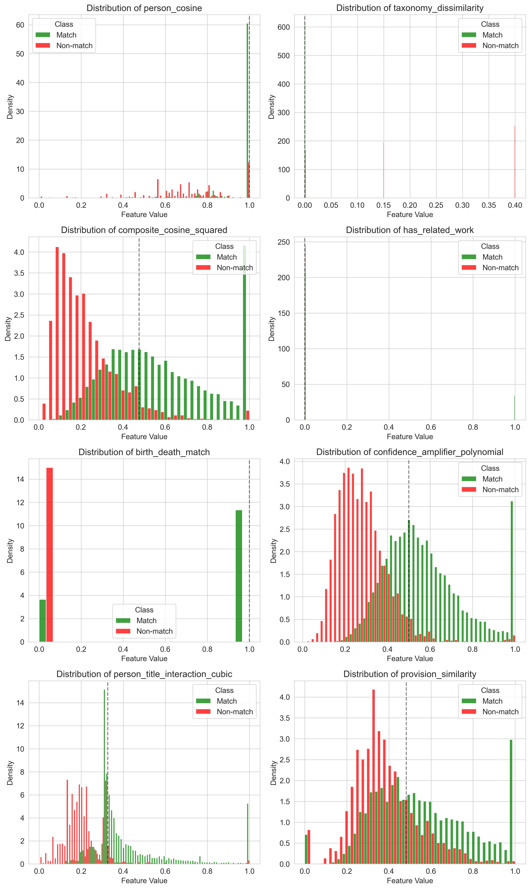
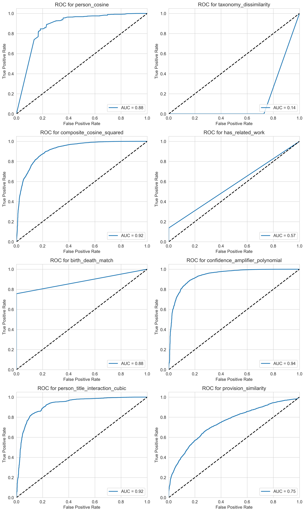
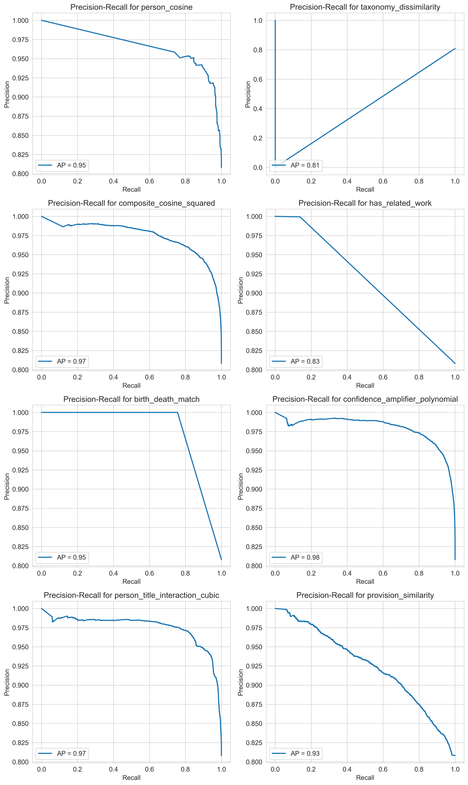
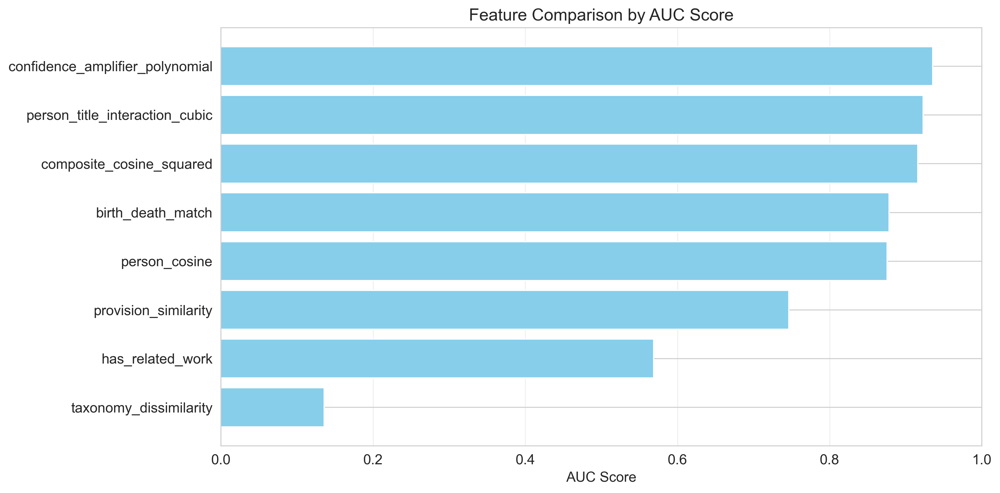

| Feature | Model Weight | AUC Score | Absolute Weight |
|---|---|---|---|
| birth_death_match | 2.2444 | 0.8781 | 2.2444 |
| composite_cosine_squared | 1.4718 | 0.9160 | 1.4718 |
| taxonomy_dissimilarity | -1.4386 | 0.1358 | 1.4386 |
| confidence_amplifier_polynomial | 1.1793 | 0.9356 | 1.1793 |
| person_cosine | 1.0293 | 0.8756 | 1.0293 |
| has_related_work | 0.9020 | 0.5687 | 0.9020 |
| person_title_interaction_cubic | 0.6448 | 0.9229 | 0.6448 |
| provision_similarity | 0.4204 | 0.7463 | 0.4204 |
These plots show how each feature is distributed across the match and non-match classes.

These plots show how well each feature separates the match and non-match classes.


